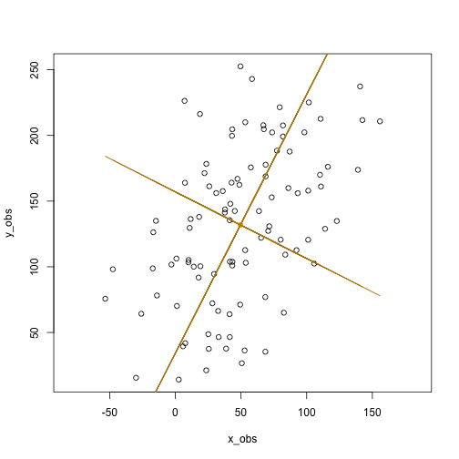

In R, there are several functions from different packages that allow us to perform PCA. These include;
Note, although prcomp sets scale=FALSE for consistency with S, in general scaling is advised. We will demonstrate first pca of unscaled and then scaled data. Scaling scaled the variables to have unit variance and is advised before analysis takes place.
We will demonstrate some of these and explore these using exploR
Give an input matrix P and result res
| Function | loadings | scores | plot |
|---|---|---|---|
| prcomp(P, center=TRUE, scale=TRUE) | res$rotation | res$x | biplot(res) |
| princomp(P, cor=TRUE) | res$loadings | res$scores | biplot(res) |
| PCA(P) | res$svd$V | res$ind$coord | plot(res) |
| dudi.pca(P, center=TRUE, scale=TRUE) | res$c1 | res$li | scatter(res) |
With ade4::dudi.pca and prcomp the default is center = TRUE, scale = TRUE.But with princomp, cor=FALSE by default.
Create a cloud of points; two vectors, x,y of length 100.
set.seed(2) #sets the seed for random number generation.
x <- 1:100 #creates a vector x with numbers from 1 to 100
ex <- rnorm(100, 0, 30) #100 normally distributed random numbers, mean=0, sd=30
ey <- rnorm(100, 0, 30) # 100 normally distributed random numbers, mean=0, sd=30
y <- 30 + 2 * x #sets y to be a vector that is a linear function of x
x_obs <- x + ex #adds "noise" to x
y_obs <- y + ey #adds "noise" to y
par(mfrow=c(1,2))
hist(x_obs)
hist(y_obs)Save both vectors in a matrix of toy data called P
P <- cbind(x_obs,y_obs) #places points in matrix
summary(P)## x_obs y_obs
## Min. :-53.33 Min. : 14.13
## 1st Qu.: 21.44 1st Qu.: 97.22
## Median : 44.37 Median :134.91
## Mean : 49.58 Mean :131.88
## 3rd Qu.: 77.91 3rd Qu.:174.29
## Max. :155.78 Max. :252.63Plot x,y. Show center (mean (x), mean(y)) on plot
plot(P,asp=1,col=1) #plot points
points(x=mean(x_obs),y=mean(y_obs),col="orange", pch=19) #show centerPCA can be computed as a singular value decomposition of a column centered matrix. Therefore we first processs the matrix. In this example, we don’t scale. This is not advised.
#center matrix
M <- cbind(x_obs-mean(x_obs),y_obs-mean(y_obs))
Mx<- scale(P, center=TRUE,scale=FALSE)M equal to Mx, ignore col names
all.equal(M, Mx, check.attributes=FALSE) ## [1] TRUEThe eigenvectors of the covariance matrix provide the principal axes, and the eigenvalues quantify the fraction of variance explained in each component.
creates covariance matrix
MCov <- cov(M) compute eigen values and vectors
eigenvalues <- eigen(MCov)$values
eigenvalues## [1] 4110.45 1189.45(This is the same as prcomp PCA of the unscaled data)
prcomp(P)$sdev^2 ## [1] 4110.45 1189.45and similar to princomp
princomp(P)$sdev^2 ## Comp.1 Comp.2
## 4069.345 1177.556eigenVectors <- eigen(MCov)$vectors
eigenVectors## [,1] [,2]
## [1,] 0.4527354 -0.8916449
## [2,] 0.8916449 0.4527354which is equivalent to
prcomp(P)$rotation## PC1 PC2
## x_obs 0.4527354 -0.8916449
## y_obs 0.8916449 0.4527354The right singular vectors are the eigenvectors of MtM. Next I plot the principal axes (yellow):
plot(P,asp=1,col=1) #plot points
points(x=mean(x_obs),y=mean(y_obs),col="orange", pch=19) #show center
lines(x_obs,eigenVectors[2,1]/eigenVectors[1,1]*M[x]+mean(y_obs),col=8)This shows the first principal axis. Note that it passes through the mean as expected. The ratio of the eigenvectors gives the slope of the axis.
Next plot the second principal axis, orthlogonal to the first
plot(P,asp=1,col=1) #plot points
points(x=mean(x_obs),y=mean(y_obs),col="orange", pch=19) #show center
lines(x_obs,eigenVectors[2,1]/eigenVectors[1,1]*M[x]+mean(y_obs),col=8)
lines(x_obs,eigenVectors[2,2]/eigenVectors[1,2]*M[x]+mean(y_obs),col=8) shows the second principal axis, which is orthogonal to the first (recall that the matrix Vt in the singular value decomposition is orthogonal). This can be checked by noting that the second principal axis is also
as the product of orthogonal slopes is -1.
Singular value decomposition of M. The singular value decomposition of M decomposes it into M=UDVt where D is a diagonal matrix and both U and Vt are orthogonal matrices.
The output is
d - a vector containing the singular values u - the left singular vectors v - the right singular vectors of x
The columns u from the SVD correspond to the principal components x in the PCA.
Furthermore, the matrix v from the SVD is equivalent to the rotation matrix returned by prcomp.
Now repeat the code above but scale and center the data scale(P, center=TRUE, scale=TRUE).
any(M == scale(P)) #FALSE## [1] FALSEall(scale(P, center=TRUE, scale=TRUE)== scale(P)) #TRUE## [1] TRUEp0<-svd(scale(P))
p0$d #the singular values## [1] 12.065827 7.239877p0$v #the right singular vectors## [,1] [,2]
## [1,] 0.7071068 -0.7071068
## [2,] 0.7071068 0.7071068The eigenvalues are
diag(p0$d)## [,1] [,2]
## [1,] 12.06583 0.000000
## [2,] 0.00000 7.239877Which is
diag(t(p0$u) %*% M %*% p0$v)## [1] 612.6218 367.5924Eigenvalues from svd on the scaled data. The diagonal elements of d from the SVD are proportional to the standard deviations (sdev) returned by PCA.
The elements of d are formed by taking the sum of the squares of the principal components but not dividing by the sample size.
Therefore we can devide by the sample size, which is either the ncol or nrow of the matrix -1.
p0$d^2/(nrow(p0$u) - 1)## [1] 1.4705472 0.5294528eigs= p0$d^2/(nrow(p0$u) - 1)
eigs## [1] 1.4705472 0.5294528Summary of eigs
eigSum.svd= rbind(
eigs= eigs,
SD = sqrt(eigs),
Proportion = eigs/sum(eigs),
Cumulative = cumsum(eigs)/sum(eigs))
eigSum.svd## [,1] [,2]
## eigs 1.4705472 0.5294528
## SD 1.2126612 0.7276350
## Proportion 0.7352736 0.2647264
## Cumulative 0.7352736 1.0000000First stats::prcomp. The eigenvectors are stored in $rotation. Note these are the same as svd$v on scale data
p1<- prcomp(P, scale = TRUE)
p1$rotation## PC1 PC2
## x_obs 0.7071068 -0.7071068
## y_obs 0.7071068 0.7071068 (p1$rotation== p0$v)## PC1 PC2
## x_obs TRUE TRUE
## y_obs TRUE TRUEeigenvalues - sdev eigenvector - rotation
names(p1)## [1] "sdev" "rotation" "center" "scale" "x"summary(p1)## Importance of components:
## PC1 PC2
## Standard deviation 1.2127 0.7276
## Proportion of Variance 0.7353 0.2647
## Cumulative Proportion 0.7353 1.0000To calculated eigenvalues information manually here is the code;
eigs= p1$sdev^2
eigSum.pca= rbind(
eigs=eigs,
SD = sqrt(eigs),
Proportion = eigs/sum(eigs),
Cumulative = cumsum(eigs)/sum(eigs))
eigSum.pca## [,1] [,2]
## eigs 1.4705472 0.5294528
## SD 1.2126612 0.7276350
## Proportion 0.7352736 0.2647264
## Cumulative 0.7352736 1.0000000identical(eigSum.svd,eigSum.pca)## [1] TRUEIf we had more components, we could generate a scree plot. Its not very useful with 2 components, but here is the code
Caculate the Proportion of Variance explained by each component (eig sum Proportion above)
ProportionVariance = p0$d^2 /sum(p0$d^2 )
ProportionVariance## [1] 0.7352736 0.2647264plot(ProportionVariance, xlim = c(0, 5), type = "b", pch = 16, xlab = "principal components",
ylab = "variance explained")
princomp was written for compatiblity with S-PLUS however it is not recommended. Its is better to use prcomp or svd. That is because by default princomp performs a decompostion of the covariance not correlation matrix. Princomp can call eigen on the correlation or covariance matrix. Its default calculation uses divisor N for the covariance matrix.
p2<-stats::princomp(P)
p2$sd^2## Comp.1 Comp.2
## 4069.345 1177.556sqrt of eigenvalues
p2$sdev## Comp.1 Comp.2
## 63.79142 34.31553eigenvectors
p2$loadings##
## Loadings:
## Comp.1 Comp.2
## x_obs 0.453 0.892
## y_obs 0.892 -0.453
##
## Comp.1 Comp.2
## SS loadings 1.0 1.0
## Proportion Var 0.5 0.5
## Cumulative Var 0.5 1.0head(p2$scores,2)## Comp.1 Comp.2
## [1,] -94.48864 -36.682917
## [2,] -99.33030 3.293649Set cor = TRUE in your call to princomp in order to perform PCA on the correlation matrix (instead of the covariance matrix)
p2b<-princomp(P, cor = TRUE)
p2b$sdev^2## Comp.1 Comp.2
## 1.4705472 0.5294528p2b$loadings##
## Loadings:
## Comp.1 Comp.2
## x_obs 0.707 0.707
## y_obs 0.707 -0.707
##
## Comp.1 Comp.2
## SS loadings 1.0 1.0
## Proportion Var 0.5 0.5
## Cumulative Var 0.5 1.0For more info on prcomp v princomp see http://www.sthda.com/english/articles/31-principal-component-methods-in-r-practical-guide/118-principal-component-analysis-in-r-prcomp-vs-princomp/
FactoMineR::PCA calls svd to compute the PCA
p3<-FactoMineR::PCA(P)

The eigenvalues, same as eigSum and eigSum.svd above
t(p3$eig)## comp 1 comp 2
## eigenvalue 1.470547 0.5294528
## percentage of variance 73.527362 26.4726382
## cumulative percentage of variance 73.527362 100.0000000p3$var$coord ## Dim.1 Dim.2
## x_obs 0.857481 0.5145157
## y_obs 0.857481 -0.5145157First ade4::dudi.pca scales the data and stores the scaled data in $tab. In PCA this will be almost equivalent to scale. However there is a minor difference (see https://pbil.univ-lyon1.fr/R/pdf/course2.pdf). ade4 usees the duality diagram framework for computing pca and other matrix factorizations (so it provides lw and cw which are the row and columns weights). See Cruz and Holmes 2011 for a wonderful tutorial on the duality diagram framework https://www.ncbi.nlm.nih.gov/pmc/articles/PMC3265363/
p4<-ade4::dudi.pca(P, scannf = FALSE, nf=2) # save 2 axis by default,
head(p4$tab) # centered/scaled data. ## x_obs y_obs
## 1 -1.79410466 -1.1472082
## 2 -0.99902168 -1.5273772
## 3 0.02510543 -1.7859484
## 4 -1.88926469 -1.9735368
## 5 -1.11674143 -1.9968913
## 6 -0.94133545 -0.4822568head(scale(P))## x_obs y_obs
## [1,] -1.78511160 -1.1414577
## [2,] -0.99401402 -1.5197211
## [3,] 0.02497959 -1.7769963
## [4,] -1.87979464 -1.9636443
## [5,] -1.11114369 -1.9868817
## [6,] -0.93661695 -0.4798394The values used for centering are stored in cent, it is a the colMeans. norm provides the sd of the columns
p4$cent == colMeans(P)## x_obs y_obs
## TRUE TRUEsd.n <- function(x) sqrt(var(x) * (length(x) - 1)/length(x))
identical(p4$norm,apply(P, 2, sd.n))## [1] TRUEThe summary printout is equivalent to P3 (p3eig)above.Theeigenvalesarestoredinp4eig.
summary(p4)## Class: pca dudi
## Call: ade4::dudi.pca(df = P, scannf = FALSE, nf = 2)
##
## Total inertia: 2
##
## Eigenvalues:
## Ax1 Ax2
## 1.4705 0.5295
##
## Projected inertia (%):
## Ax1 Ax2
## 73.53 26.47
##
## Cumulative projected inertia (%):
## Ax1 Ax1:2
## 73.53 100.00p4$eig## [1] 1.4705472 0.5294528p4$c1## CS1 CS2
## x_obs 0.7071068 -0.7071068
## y_obs 0.7071068 0.7071068p4$co## Comp1 Comp2
## x_obs 0.857481 -0.5145157
## y_obs 0.857481 0.5145157The cumulative % of variance explained by each component ;
(k <- 100 * p4$eig/sum(p4$eig))## [1] 73.52736 26.47264cumsum(k)## [1] 73.52736 100.00000nf is an integer giving the number of axes kept. nf will always be lower that the number of row or columns of the matrix -1.
p4$nf## [1] 2c1 gives the variables’ coordinates, normed to 1. It is also called the coefficients of the combination or the loadings of variables. Equally the outpur matrix l1 gives the individuals’ coordinates, normed to 1. It is also called the loadings of individuals.
p4$c1## CS1 CS2
## x_obs 0.7071068 -0.7071068
## y_obs 0.7071068 0.7071068sum(p4$cw * p4$c1$CS1^2)## [1] 1co gives the variables’ coordinates, normed to the square root of the eigenvalues.
p4$co## Comp1 Comp2
## x_obs 0.857481 -0.5145157
## y_obs 0.857481 0.5145157sum(p4$cw * p4$co$Comp1^2)## [1] 1.470547The link between c1 and co is defined by:
p4$c1$CS1 * sqrt(p4$eig[1])## [1] 0.857481 0.857481There is also a nice package called factoextra. This works all of the above classes
library(factoextra)
res<- list(p0,p1,p2,p2b,p3,p4)
names(res) = c('svd_scaledData','prcomp', 'princomp','princomp_cov', 'FactoMineR', 'ade4')
e<-sapply(res[-1],get_eig)
# get_eig doesn't work on svd
svd.e<- t(eigSum.svd[c(1,3,4),])
svd.e[,2:3]<-svd.e[,2:3]*100 # Convert to %
colnames(svd.e)<- names(e[[1]])
e<- c(list(svd=svd.e),e)
e## $svd
## eigenvalue variance.percent cumulative.variance.percent
## [1,] 1.4705472 73.52736 73.52736
## [2,] 0.5294528 26.47264 100.00000
##
## $prcomp
## eigenvalue variance.percent cumulative.variance.percent
## Dim.1 1.4705472 73.52736 73.52736
## Dim.2 0.5294528 26.47264 100.00000
##
## $princomp
## eigenvalue variance.percent cumulative.variance.percent
## Dim.1 4069.345 77.55712 77.55712
## Dim.2 1177.556 22.44288 100.00000
##
## $princomp_cov
## eigenvalue variance.percent cumulative.variance.percent
## Dim.1 1.4705472 73.52736 73.52736
## Dim.2 0.5294528 26.47264 100.00000
##
## $FactoMineR
## eigenvalue variance.percent cumulative.variance.percent
## Dim.1 1.4705472 73.52736 73.52736
## Dim.2 0.5294528 26.47264 100.00000
##
## $ade4
## eigenvalue variance.percent cumulative.variance.percent
## Dim.1 1.4705472 73.52736 73.52736
## Dim.2 0.5294528 26.47264 100.00000The github package https://github.com/juba/explor is useful for exploring data. It includes plotting functions for many packages including ade4, FactoMineR and baseR functions prcomp and princomp;
For now on, it is usable the following types of analyses :
| Analysis | Function | Package | Notes |
|---|---|---|---|
| Principal Component Analysis | PCA | FactoMineR | - |
| Correspondance Analysis | CA | FactoMineR | - |
| Multiple Correspondence Analysis | MCA | FactoMineR | - |
| Principal Component Analysis | dudi.pca | ade4 | Qualitative supplementary variables are ignored |
| Correspondance Analysis | dudi.coa | ade4 | - |
| Multiple Correspondence Analysis | dudi.acm | ade4 | Quantitative supplementary variables are ignored |
| Specific Multiple Correspondance Analysis | speMCA | GDAtools | Supplementary variables are not supported |
| Multiple Correspondance Analysis | mca | MASS | Quantitative supplementary variables are not supported |
| Principal Component Analysis | princomp | stats | Supplementary variables are ignored |
| Principal Component Analysis | prcomp | stats | Supplementary variables are ignored |
if(!"explor" %in% rownames(installed.packages())) devtools::install_github("juba/explor")
if(!"scatterD3" %in% rownames(installed.packages()))
devtools::install_github("juba/scatterD3")require(explor)
explor::explor(p4)data(children)
res.ca <- CA(children, row.sup = 15:18, col.sup = 6:8)
explor(res.ca)Plotting using factoextra
library(factoextra)fviz_eig(p1)fviz_pca_var(p1,
col.var = "contrib", # Color by contributions to the PC
gradient.cols = c("#00AFBB", "#E7B800", "#FC4E07"),
repel = TRUE # Avoid text overlapping
)
fviz_pca_biplot(p1, repel = TRUE,
col.var = "#2E9FDF", # Variables color
col.ind = "#696969" # Individuals color
)Example using iris dataset
data(iris)
ir.pca<-prcomp(log(iris[,1:4]), center=TRUE, scale=TRUE)Easiest approach:
library(ggplot2)
library(ggfortify)
ggplot2::autoplot(ir.pca, data=iris, colour="Species", frame=TRUE, frame.type="t") library(ggplot2)
ggplot(ir.pca,aes(PC1, PC2))+
geom_point() +
stat_density_2d(aes(alpha=..level.., fill=iris$Species), bins=4, geom="polygon")
stat_ellipse() and stat_density_2d() have a lot of options. See manual pages
multivariate normal distribution.
stat_ellipse(type = "norm", linetype = 2) Euclid, is a circle with radius = level
stat_ellipse(type = "euclid", level = 3) multivariate t-distribution
stat_ellipse(type = "t")